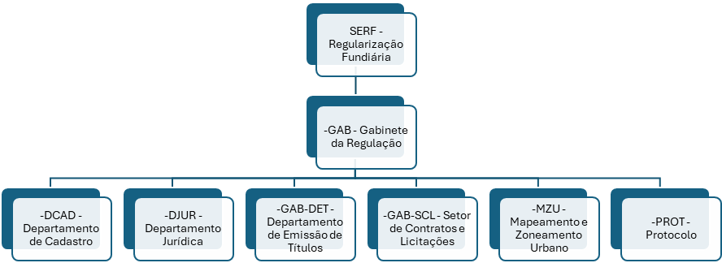

Sobre a SERF
A Secretaria Municipal de Regularização Fundiária (SERF) tem por finalidade conduzir o processo de legislação permanente de moradores de áreas urbanas irregularmente ocupadas para fins de moradia, promovendo, também, melhorias no ambiente urbano e na qualidade de vida, contribuindo para o pleno exercício da cidadania; Fazer cumprir os fins sociais da propriedade urbana no âmbito do Município de Imperatriz; Realizar o planejamento operacional, a articulação, a coordenação, a integração e a execução do processo de regularização fundiária urbana; Fazer estudos e pesquisas sobre a realidade socioeconômica e habitacional de pessoas e/ou famílias a fim de assegurar a regularização fundiária proposta por lei; Utilizar toda a estrutura do Município de Imperatriz em prol da regularização fundiária através de ação articulada com órgão e secretarias do município; Viabilizar através da Procuradoria Geral do Município (PGM), pleitos administrativos e/ou judiciais, em qualquer instância e esfera de poder, que tenham como finalidade auxiliar a Política de Regularização Fundiária do Município de Imperatriz; Instaurar e processar o Usucapião Administrativo Urbano do âmbito do Município de Imperatriz para fins de regularização fundiária, bem como encaminhar ao setor jurídico providências necessárias para que se promova ações judiciais, com base no Estatuto das Cidades e nas demais leis correlatas; emitir título definitivo de imóveis.
Informações de Contato
- Atendimento: 8h às 14h de segunda à sexta
- Endereço: Rua Monte Castelo N: 329, entre ruas Coriolano Milhomem e Simplício Moreira, Centro
Dados da Secretaria
- Funcionários Efetivos: 11
- Agente Político: 1
- Funcionários Nomeados: 29
- Funcionários Contratados: 0
- Folha Bruta: R$ 127.434,04
- Maior Salário: Engenheiro Agrônomo - R$ 7.188,30
- Menor Salário: Chefe de Núcleo de Notificações - R$ 1.412,00
- Salário do Secretário: R$ 14.800,00
Organograma
- SERF - Regularização Fundiária